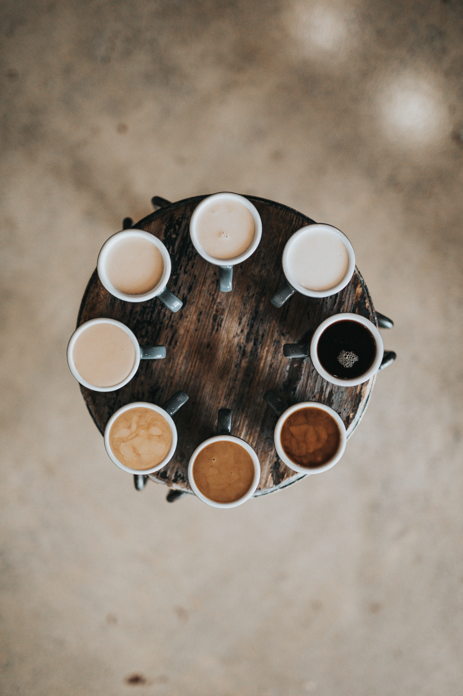
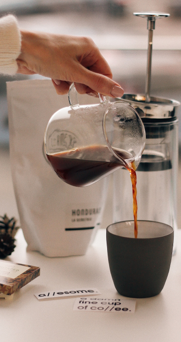
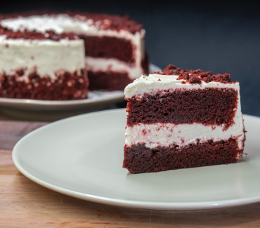
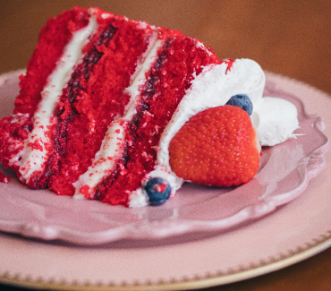
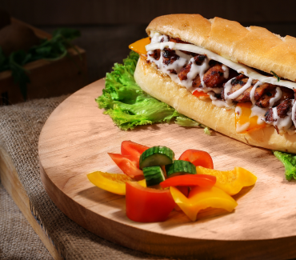
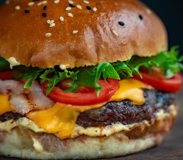

Um café clássico, forte e encorpado, servido em uma xícara pequena. Feito com uma dose de café moído finamente e água quente pressurizada através dele.
Latte
R$: 8
Uma combinação de espresso, leite vaporizado e espuma de leite. O latte é suave e cremoso, e pode ser servido com uma pitada de canela ou chocolate em pó.
Americano
R$: 8
Similar ao espresso, mas diluído com água quente para criar um sabor mais suave. O americano é servido em uma xícara grande.
Cappuccino
R$: 8
Feito com espresso, leite vaporizado e uma camada de espuma de leite densa no topo. O cappuccino é uma escolha popular para quem gosta de um café mais leve e cremoso.

Gelados
Iced Coffee
R$: 8
Uma versão gelada do clássico café preto, feito com uma infusão fria de café moído e água filtrada. Servido em uma jarra com gelo e pode ser personalizado com leite, xarope ou adoçante a gosto.
Frappé
R$: 8
Uma bebida refrescante feita com uma mistura de café forte, leite, gelo e xarope. A mistura é batida em um liquidificador para criar uma textura suave e cremosa. O frappé pode ser feito em vários sabores, como chocolate, caramelo ou baunilha.
Cold Brew
R$: 8
Feito com café moído grosso e água fria, o cold brew é uma bebida encorpada e suave. O café é deixado em infusão por várias horas para criar um sabor mais suave e menos ácido do que o café quente.
Mocha Gelado
R$: 8
Uma combinação de espresso, leite vaporizado, chocolate e gelo. O mocha gelado é uma opção indulgente e deliciosa para os amantes de café e chocolate.





Pratos
Sanduíche de Frango
R$: 8
Um sanduíche de pão integral recheado com frango grelhado, queijo, tomate e guacamole caseiro. Servido com batatas fritas ou salada.
Salada de quinoa
R$: 8
Uma salada leve e saudável, com quinoa, tomate, pepino, pimentão e cenoura ralada. Temperada com um molho de vinagrete de limão e ervas frescas.
Wrap de salmão
R$: 8
Um wrap de farinha de trigo recheado com salmão defumado, cream cheese, cebola roxa e rúcula. Servido com batata doce frita ou salada verde.
Sanduíche de roast beef
R$: 8
Um pão francês crocante, recheado com fatias de roast beef, queijo gorgonzola, alface, tomate e um molho de mostarda e mel. Servido com batatas fritas ou salada verde.
Hambúrguer vegetariano
R$: 8
Um hambúrguer vegetariano saboroso, feito com uma mistura de feijão preto, arroz, cenoura e temperos. Servido em um pão de brioche, com queijo, alface, tomate e um molho de iogurte com ervas.
Cuscuz marroquino
R$: 8
Uma porção generosa de cuscuz marroquino cozido, misturado com legumes refogados (abobrinha, cenoura, pimentão, cebola e alho), grão-de-bico e especiarias (cominho, coentro e açafrão). Servido com um fio de azeite e folhas de coentro fresco.
Sobremesas
Bolo de chocolate
R$: 8
Um bolo de chocolate macio e úmido, coberto com uma camada rica e cremosa de ganache de chocolate. Perfeito para os amantes de chocolate.
Cheesecake
R$: 8
Uma sobremesa clássica de cheesecake com uma crosta de biscoito, recheada com um creme de queijo suave e servida com um mix de frutas vermelhas frescas.
Brownie de nozes
R$: 8
Um brownie denso e rico, com pedaços de nozes crocantes misturados na massa. Servido quente e com uma bola de sorvete de creme, é uma opção indulgente.
Pudim de leite condensado
R$: 8
Um pudim de leite macio e doce, feito com leite condensado, leite e ovos. Servido em uma xícara com um toque de canela em cima.
Pavê de morango
R$: 8
Camadas alternadas de biscoitos champanhe, creme de baunilha e morangos frescos, tudo montado em uma taça de sobremesa. Uma opção refrescante e frutada.
Tiramisu
R$: 8
Um clássico italiano, com camadas de biscoitos embebidos em café, creme de mascarpone e cacau em pó. Servido em porções individuais, é uma sobremesa sofisticada e saborosa.